Distributed map-matching and route reconstruction
UE24CS352A Machine Learning · Hackathon technical report
Team 70
Spoorthy M - PES1UG24AM280
Praneetha Sreedharala - PES1UG24AM281
Sreekar Bandi - PES1UG24AM282
Sri Ram V - PES1UG24AM283
Repository: https://github.com/spoorthy0805/PathSnap-Team70.git
Each trip consists of a ~1 Hz GPS track (.track), the local road network (.nodes,
directed .arcs) and, for training, the reference route as an ordered list of arc ids (.route).
The task is to assign each GPS point to the road arc the vehicle was actually on, and to output a connected route.
Arc ids are local to each trip, so there is no fixed label space for a multi-class classifier. We therefore treat map matching as binary candidate classification. For each GPS point, the arcs within 50 m (at most the 12 nearest) are candidates. A classifier scores P(candidate is the true arc) from 26 features, and the observation prediction is the highest-scoring candidate (Top-1). These probabilities then become the emission scores of an HMM whose transitions come from directed shortest-path distances in the road graph. Viterbi decoding returns the most likely connected arc sequence.
Data partitions used throughout: train (80 trips) for fitting, 5-fold GroupKFold cross-validation grouped by trip, Bayesian optimisation and HMM-parameter selection; student test (10 trips) only for reporting and model comparison; the 10 evaluator trips were never available to us and are only read by the API on Laptop 1 on evaluation day.
Loading and validation (src/pathsnap/io.py, scripts/01_eda.py). Every file was parsed and
checked for NaNs, out-of-range coordinates, non-monotonic timestamps, dangling arc endpoints and isolated nodes.
None were found (table 2.1), so no rows were imputed or dropped at load time.
Projection. Trips span several countries, so each trip is projected to a local azimuthal-equidistant
plane centred on the trip (pyproj, geo.py). This lets all distances and bearings be computed in
metres with plain Euclidean geometry.
Per-point labels. The reference route is a sequence of arcs, not one label per GPS point. We derive
per-point labels with a monotone dynamic-programming alignment of the track to the route positions
(labels.py): each point gets one route arc, positions may not go backwards, and the total point-to-arc
distance is minimised.
Unreliable trips. Two training trips have a median point-to-label distance above 50 m: 00000033 (122 m), 00000054 (140 m). In 00000054 the whole GPS track is shifted about 130 m away from every road; in 00000033 the reference route runs along a parallel road about 120 m away. Their labels cannot be trusted, so these trips are excluded from training (78 reliable trips remain). They stay in the EDA tables.
Candidate generation (candidates.py). Arcs are cut into ≤ 20 m pieces and indexed in a KD-tree. For
each point we take all arcs within R metres, keeping the K nearest. A grid search over R and K
(candidate_miss_rate.csv) chose R = 50 m, K = 12. With these, the true arc is missing from the
candidate set for 1.57% of reliable training points and 0.21% of student-test points, with about 7 candidates per
point. Raising R to 75 m would save only about 0.5 pp of misses for 20% more candidates.
| Quantity | Train | Student test |
|---|---|---|
| Trips | 80 | 10 |
| GPS points | 208,417 | 19,160 |
| Track length (km) | 2,978 | 297 |
| Share of 1 s sampling steps | 96.5% | 98.6% |
| Trips with gaps > 30 s | 28 | 2 |
| Trips with jumps > 70 m/s | 10 | 1 |
| NaN values / invalid coordinates | 0 / 0 | 0 / 0 |
| Non-monotonic timestamps | 0 | 0 |
| GPS → reference route distance, median / p95 (m) | 5.6 / 140.3 | 5.2 / 16.8 |
| Median arc length (m) | 25.8 | 25.3 |
| Candidate rows (R = 50 m, K = 12) | 1,342,714 | 146,896 |
| Positive (reference-arc) rate | 13.7% | 13.0% |
Table 2.1 — experiments/results/eda_summary.json, feature_table_stats.json
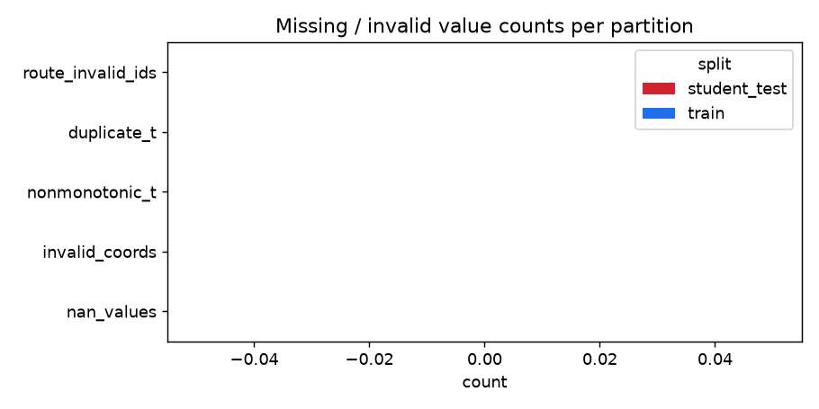
dt_prev/dt_next/gap_flag
features and the gap rule in the HMM.| Split | Rule | Top-1 |
|---|---|---|
| train | nearest arc (rank 0) | 0.4948 |
| train | nearest arc with heading agreement | 0.7211 |
| train | 5-point window mean distance + heading | 0.7061 |
| student_test | nearest arc (rank 0) | 0.5373 |
| student_test | nearest arc with heading agreement | 0.8261 |
| student_test | 5-point window mean distance + heading | 0.8091 |
Table 2.2 — rule-based baselines, experiments/results/heuristic_baselines.csv
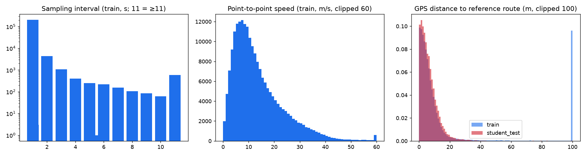
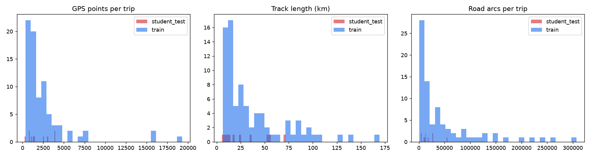
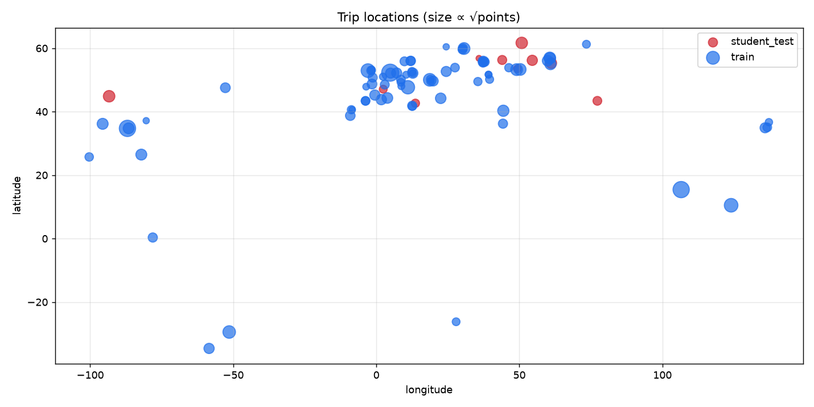
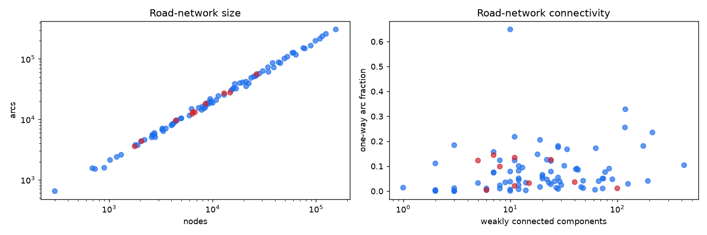
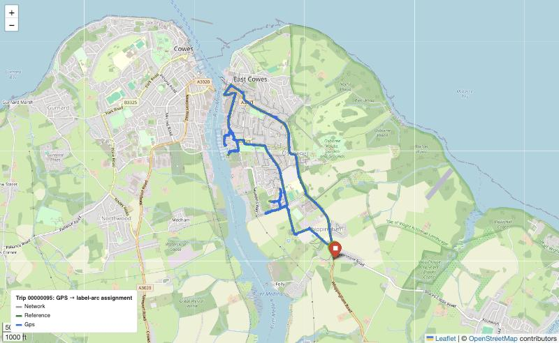
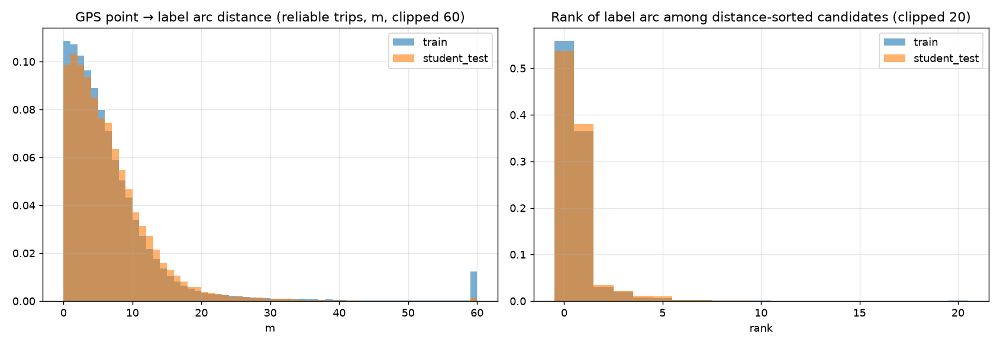
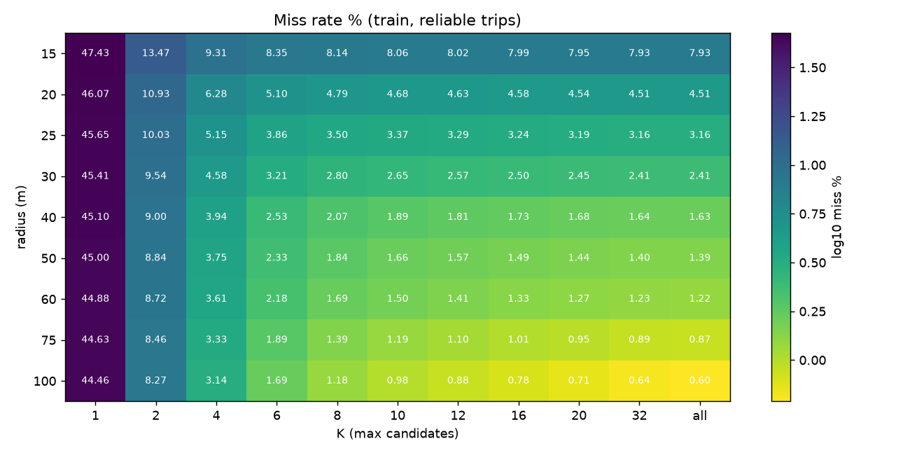
Each candidate row describes one (GPS point, candidate arc) pair. Raw longitude, latitude, timestamps and ids are
deliberately not used, so the model cannot memorise locations of specific trips. All 26 features are computed
from the track and the network only (features.py):
| Group | Features | Rationale (observed in EDA) |
|---|---|---|
| Geometry | dist, rank, dist_minus_min, dist_ratio, frac, at_endpoint | Closeness is the main signal, but relative to the other candidates (dist_minus_min has the strongest univariate separation, AUC strength 0.82). |
| Candidate context | n_cands, n_within_radius, min_dist, second_gap | The same distance means different things in a dense junction and on an isolated highway. |
| Arc properties | arc_len_log, two_way, out_deg_end, in_deg_start | Short connector arcs and two-way pairs cause most confusions. |
| Direction | heading_cos, heading_diff, heading_cos_wide, heading_valid | Separates the two directions of a two-way street (baseline jump 0.54 → 0.83). |
| Motion | speed, dt_prev, dt_next, gap_flag | Heading is meaningless when stopped; gaps make neighbours unreliable. |
| Temporal consistency | dist_prev1, dist_next1, dist_win5_mean, dist_win5_max | The true arc is also close to neighbouring points; a crossing street is not. |
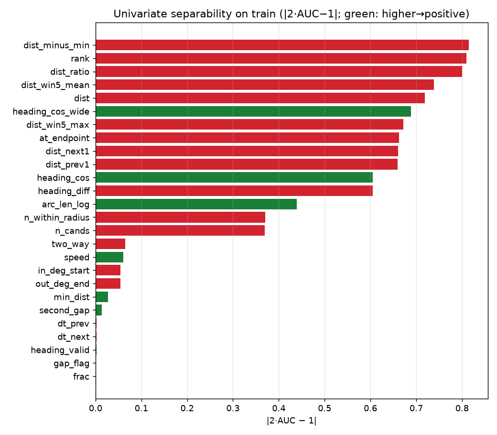
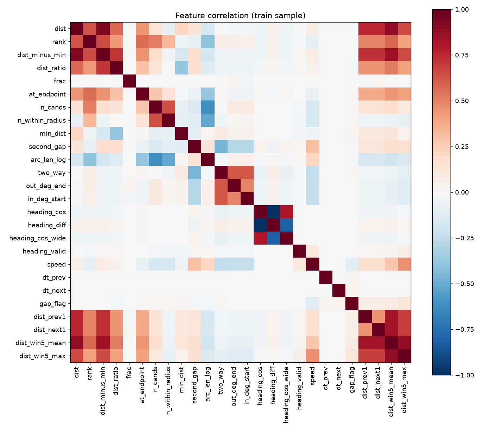
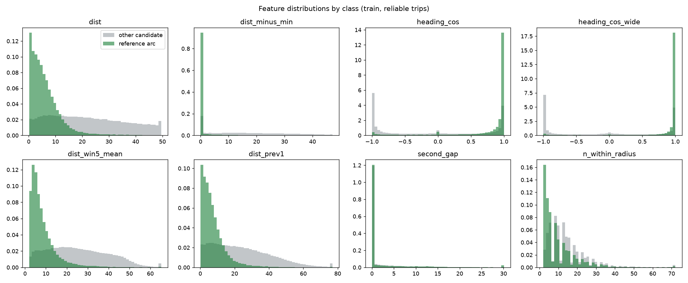
Protocol. Eight models from seven algorithm families were trained on the same 26-feature candidate table
(scripts/04_model_experiments.py, src/pathsnap/models.py). The setup was identical for all:
Metrics.
The selection rule was fixed in advance: Top-1 first (it is what the HMM consumes), then macro-F1 and log loss as tie-breakers.
| Model | Family | Key configuration | CV macro-F1 | Top-1 (test) | Route continuity (test) | Macro-F1 (test) | Log loss (test) | Inference ms / 1k pts |
|---|---|---|---|---|---|---|---|---|
| Logistic Regression | Linear | C=1.0, max_iter=1000 | 0.9292 ± 0.0111 | 0.8764 | 0.9339 | 0.9235 | 0.0985 | 0.1 |
| Gaussian Naive Bayes | Probabilistic | var_smoothing=1e-09 | 0.8708 ± 0.0155 | 0.8618 | 0.9239 | 0.8673 | 0.4773 | 0.3 |
| k-Nearest Neighbours | Instance-based | n_neighbors=25, weights=distance | 0.9245 ± 0.0117 | 0.8745 | 0.9296 | 0.9199 | 0.1295 | 214.9 |
| Decision Tree | Tree | max_depth=12, min_samples_leaf=50 | 0.9313 ± 0.0121 | 0.8837 | 0.9346 | 0.9305 | 0.0864 | 0.2 |
| Random Forest | Ensemble (bagging) | n_estimators=100, min_samples_leaf=5, max_features=sqrt, max_samples=0.5 | 0.9364 ± 0.0113 | 0.8859 | 0.9364 | 0.9328 | 0.0769 | 6.8 |
| LightGBM | Boosting | n_estimators=400, learning_rate=0.05, num_leaves=63, subsample=0.8, subsample_freq=1, colsample_bytree=0.8 | 0.9359 ± 0.0127 | 0.8945 | 0.9378 | 0.9360 | 0.0765 | 17.3 |
| XGBoost | Boosting | n_estimators=400, learning_rate=0.05, max_depth=7, subsample=0.8, colsample_bytree=0.8 | 0.9369 ± 0.0127 | 0.8970 | 0.9414 | 0.9375 | 0.0731 | 3.9 |
| Multi-layer Perceptron | Neural network | hidden=[64, 32], alpha=0.0001, lr=0.001, batch_size=1024, epochs=20 | 0.9328 ± 0.0117 | 0.8890 | 0.9423 | 0.9309 | 0.0801 | 0.7 |
Table 3.1 — experiments/results/phase4/comparison.csv. "Top-1", "Macro-F1", "Log loss", "Route continuity" are student-test values (classifier only, no HMM); CV values are mean ± std over 5 folds. All metrics apply to all models (each outputs probabilities), so there are no N/A cells.
| Model | CV train Top-1 | CV val Top-1 | Gap (pp) | CV train log loss | CV val log loss | Test Top-1 |
|---|---|---|---|---|---|---|
| Logistic Regression | 0.8836 | 0.8795 | 0.4 | 0.1017 | 0.1030 | 0.8764 |
| Gaussian Naive Bayes | 0.8615 | 0.8574 | 0.4 | 0.5240 | 0.5211 | 0.8618 |
| k-Nearest Neighbours | 0.8867 | 0.8717 | 1.5 | 0.1088 | 0.1481 | 0.8745 |
| Decision Tree | 0.8986 | 0.8792 | 1.9 | 0.0708 | 0.0995 | 0.8837 |
| Random Forest | 0.9272 | 0.8841 | 4.3 | 0.0492 | 0.0852 | 0.8859 |
| LightGBM | 0.9314 | 0.8839 | 4.8 | 0.0486 | 0.0873 | 0.8945 |
| XGBoost | 0.9296 | 0.8863 | 4.3 | 0.0500 | 0.0824 | 0.8970 |
| Multi-layer Perceptron | 0.9057 | 0.8830 | 2.3 | 0.0689 | 0.0898 | 0.8890 |
Table 3.2 — experiments/results/phase4/comparison.csv (cv_train_* computed on each fold's training trips).
A1. Why suitable?
A linear model over standardised features is the simplest probabilistic scorer: if the reference arc can be separated from the other candidates by a weighted sum of distance, rank and heading agreement, it gives calibrated probabilities that the HMM can use directly.
A2. Strengths and limitations
Fast to train (≈0.7 s per fold) and to predict (0.1 ms per 1k points), and its probabilities are well calibrated. It cannot model interactions. For example, a large distance matters much less when the point's heading is invalid (the vehicle is stopped), and a single global weight for dist cannot express that.
B5. Important hyperparameters (initial values)
C = 1.0 (inverse L2 strength), max_iter = 1000, lbfgs solver; StandardScaler in front.
B6. Loss / objective
L2-regularised binary cross-entropy (log loss) over candidate rows.
C7–C8. Student-test performance
On the 10 student-test trips (147k candidate rows, 19,160 GPS points): observation Top-1 0.8764, candidate macro-F1 0.9235 (precision 0.9196, recall 0.9276), log loss 0.0985, route continuity 0.9339. In 5-fold CV: Top-1 0.8795 ± 0.0314, macro-F1 0.9292.
C9. Over- or underfitting?
It underfits: the train/validation Top-1 gap is only 0.4 pp, and both sit about 1 pp below the tree ensembles. The error is bias, not variance, so more data or regularisation would not help; non-linear models do.
A1. Why suitable?
Naive Bayes is the cheapest generative baseline. We included it to measure how much of the problem is solved by treating the features as independent evidence.
A2. Strengths and limitations
Trains in 0.1 s. Its independence assumption is badly violated here: dist, dist_minus_min, dist_ratio, rank and the window distances are strongly correlated (see the feature correlation figure), so the same evidence is counted several times. That makes the probabilities over-confident.
B5. Important hyperparameters (initial values)
var_smoothing = 1e-9 (default); no other tunable parameters.
B6. Loss / objective
No iterative loss; class-conditional Gaussian means and variances are estimated by maximum likelihood.
C7–C8. Student-test performance
On the 10 student-test trips (147k candidate rows, 19,160 GPS points): observation Top-1 0.8618, candidate macro-F1 0.8673 (precision 0.8275, recall 0.9294), log loss 0.4773, route continuity 0.9239. In 5-fold CV: Top-1 0.8574 ± 0.0300, macro-F1 0.8708.
C9. Over- or underfitting?
It underfits and is badly calibrated. Train and validation Top-1 are almost equal (0.8615 vs 0.8574), but log loss is 0.5211, about 6× the other models, because the double-counted evidence pushes probabilities towards 0 and 1. This alone rules it out as an HMM emission model.
A1. Why suitable?
Map matching is local: a candidate whose distance, heading and neighbour-distance profile looks like previously seen correct candidates is probably correct. KNN tests that directly, without assuming a functional form.
A2. Strengths and limitations
It needs no training, but prediction is brute-force over the stored rows. Even with only 60k training rows (a random subsample, needed because of memory and time) it is the slowest model at 214.9 ms per 1k points, about 50× XGBoost. It is also sensitive to feature scaling and irrelevant dimensions.
B5. Important hyperparameters (initial values)
n_neighbors = 25, weights = distance, Euclidean metric on standardised features; trained on 60,000 sampled rows.
B6. Loss / objective
None (lazy learner); the probability is the distance-weighted vote of the 25 neighbours.
C7–C8. Student-test performance
On the 10 student-test trips (147k candidate rows, 19,160 GPS points): observation Top-1 0.8745, candidate macro-F1 0.9199 (precision 0.9165, recall 0.9234), log loss 0.1295, route continuity 0.9296. In 5-fold CV: Top-1 0.8717 ± 0.0315, macro-F1 0.9245.
C9. Over- or underfitting?
Mild variance: train Top-1 0.8867 vs validation 0.8717, and validation log loss (0.1481) is noticeably worse than train (0.1088). With distance weighting each training row is its own nearest neighbour, which inflates the training scores. On held-out data it is below logistic regression on both Top-1 and log loss.
A1. Why suitable?
A single tree learns threshold rules similar to those a human would write ("nearest arc unless heading disagrees"), so it is interpretable and captures the interactions the linear model misses.
A2. Strengths and limitations
Interpretable and fast at inference (0.2 ms per 1k points). A single tree is high-variance and its probabilities are piecewise constant (leaf frequencies), which gives coarse HMM emissions.
B5. Important hyperparameters (initial values)
max_depth = 12, min_samples_leaf = 50, Gini criterion.
B6. Loss / objective
Greedy minimisation of Gini impurity at each split.
C7–C8. Student-test performance
On the 10 student-test trips (147k candidate rows, 19,160 GPS points): observation Top-1 0.8837, candidate macro-F1 0.9305 (precision 0.9365, recall 0.9248), log loss 0.0864, route continuity 0.9346. In 5-fold CV: Top-1 0.8792 ± 0.0322, macro-F1 0.9313.
C9. Over- or underfitting?
Mild overfitting: train Top-1 0.8986 vs validation 0.8792 (gap 1.9 pp), and train log loss 0.0708 vs validation 0.0995. The depth and leaf-size limits keep it from memorising, but it still trails the ensembles.
A1. Why suitable?
Averaging many decorrelated trees keeps the decision-tree interactions while removing most of their variance; it also gives smoother probabilities than one tree.
A2. Strengths and limitations
Robust and needs little tuning. Each tree sees only half the rows (max_samples = 0.5) and √26 ≈ 5 features per split. Fit time is the largest of the tree models (≈25 s per fold), and the model file is big.
B5. Important hyperparameters (initial values)
n_estimators = 100, min_samples_leaf = 5, max_features = sqrt, max_samples = 0.5.
B6. Loss / objective
Each tree minimises Gini impurity; the forest averages the leaf probabilities.
C7–C8. Student-test performance
On the 10 student-test trips (147k candidate rows, 19,160 GPS points): observation Top-1 0.8859, candidate macro-F1 0.9328 (precision 0.9405, recall 0.9254), log loss 0.0769, route continuity 0.9364. In 5-fold CV: Top-1 0.8841 ± 0.0324, macro-F1 0.9364.
C9. Over- or underfitting?
It overfits the training trips (train Top-1 0.9272 vs validation 0.8841, gap 4.3 pp; train log loss 0.0492 vs 0.0852), but validation performance is still among the best. The gap is the usual ensemble memorisation of training rows rather than a loss of generalisation.
A1. Why suitable?
Gradient-boosted trees fit the residual errors of the previous trees, which suits the many weak but complementary signals here (distance, heading, neighbour consistency, arc degree).
A2. Strengths and limitations
Strong accuracy and good calibration. The leaf-wise growth (num_leaves = 63) overfits easily. Its averaged validation log loss is lowest at round 153 (0.082) and then rises to 0.090 by round 400 (see the loss curves), so it would need early stopping.
B5. Important hyperparameters (initial values)
n_estimators = 400, learning_rate = 0.05, num_leaves = 63, subsample = 0.8 (every iteration), colsample_bytree = 0.8.
B6. Loss / objective
Binary log loss, minimised by gradient boosting with second-order (Newton) leaf values.
C7–C8. Student-test performance
On the 10 student-test trips (147k candidate rows, 19,160 GPS points): observation Top-1 0.8945, candidate macro-F1 0.9360 (precision 0.9403, recall 0.9317), log loss 0.0765, route continuity 0.9378. In 5-fold CV: Top-1 0.8839 ± 0.0336, macro-F1 0.9359.
C9. Over- or underfitting?
It overfits slightly: train Top-1 0.9314 vs validation 0.8839 (gap 4.8 pp), and the per-round validation log loss bottoms out and then creeps up while the training loss keeps falling. Test Top-1 (0.8945) is still second best.
A1. Why suitable?
Same reasoning as LightGBM, but depth-wise trees with a fixed maximum depth and explicit L2 regularisation on the leaf weights give smoother, better-calibrated probabilities. That matters because these probabilities become the HMM emission scores.
A2. Strengths and limitations
Best Top-1, macro-F1 and log loss of all eight models, with fast histogram-based training and only 3.9 ms per 1k points at inference. Like every candidate-level classifier, it scores each GPS point independently and cannot enforce route connectivity, which is why the HMM is still needed.
B5. Important hyperparameters (initial values)
n_estimators = 400, learning_rate = 0.05, max_depth = 7, subsample = 0.8, colsample_bytree = 0.8, tree_method = hist, λ = 1 (default).
B6. Loss / objective
Binary log loss (binary:logistic), minimised by second-order gradient boosting with L2-regularised leaf weights.
C7–C8. Student-test performance
On the 10 student-test trips (147k candidate rows, 19,160 GPS points): observation Top-1 0.8970, candidate macro-F1 0.9375 (precision 0.9434, recall 0.9318), log loss 0.0731, route continuity 0.9414. In 5-fold CV: Top-1 0.8863 ± 0.0336, macro-F1 0.9369.
C9. Over- or underfitting?
Moderate train/validation gap (train Top-1 0.9296 vs validation 0.8863, 4.3 pp). The averaged validation log loss reaches its minimum (0.0815) at round 171 and is essentially flat afterwards (0.0824 at round 400) while the training loss keeps falling to 0.052, so the extra rounds add a little overfitting but do not hurt held-out accuracy. Student-test Top-1 (0.8970) is higher than its CV estimate, which shows it generalises to unseen trips.
A1. Why suitable?
A small neural network can learn smooth non-linear decision boundaries over all features jointly, and its training loss can be monitored epoch by epoch.
A2. Strengths and limitations
Smooth probabilities and the highest classifier-only route continuity (0.9423). It needs feature scaling and careful learning-rate and epoch choices, and on tabular data of this size it does not beat boosted trees.
B5. Important hyperparameters (initial values)
Hidden layers (64, 32), ReLU, Adam, learning rate 1e-3, L2 α = 1e-4, batch 1024, 20 epochs (partial_fit loop recording train and validation loss each epoch).
B6. Loss / objective
Binary cross-entropy with an L2 penalty, minimised by Adam.
C7–C8. Student-test performance
On the 10 student-test trips (147k candidate rows, 19,160 GPS points): observation Top-1 0.8890, candidate macro-F1 0.9309 (precision 0.9328, recall 0.9289), log loss 0.0801, route continuity 0.9423. In 5-fold CV: Top-1 0.8830 ± 0.0321, macro-F1 0.9328.
C9. Over- or underfitting?
Mild overfitting late in training: train Top-1 0.9057 vs validation 0.8830 (gap 2.3 pp). The averaged validation loss is lowest at epoch 4 (0.0876) and then drifts up to 0.0898 at epoch 20 while the training loss keeps falling, so early stopping around epoch 4–5 would have been slightly better.
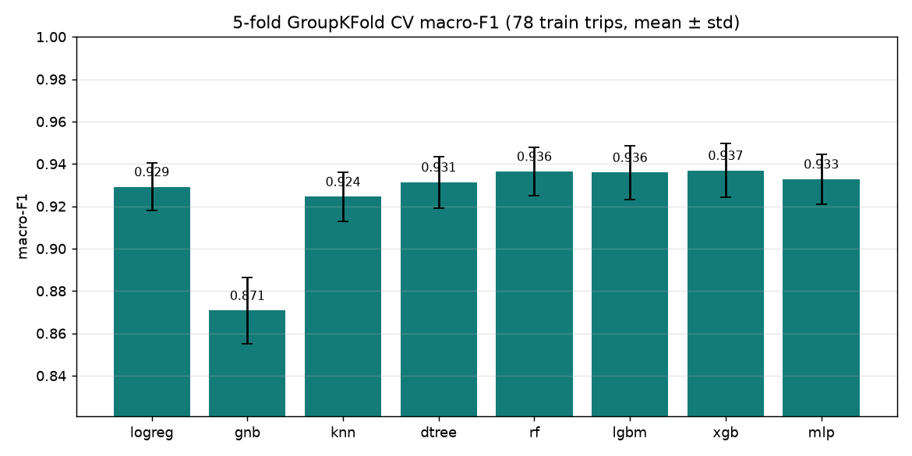
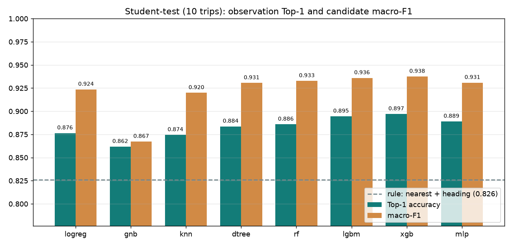
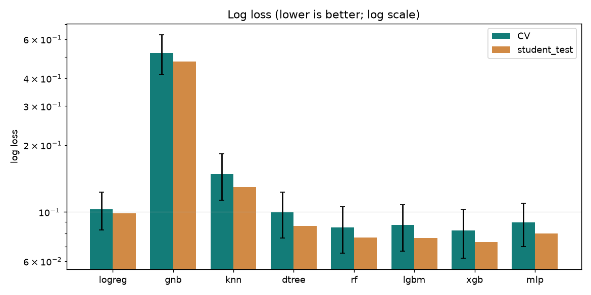
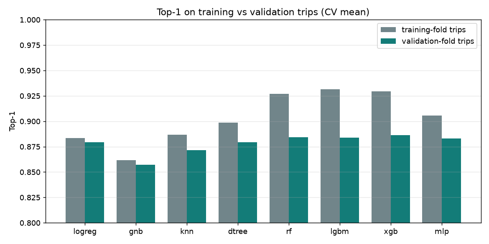
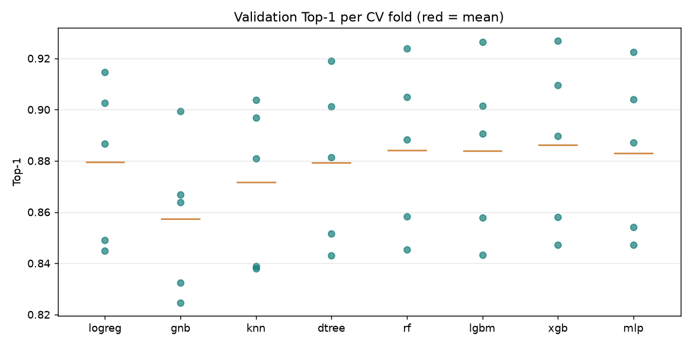
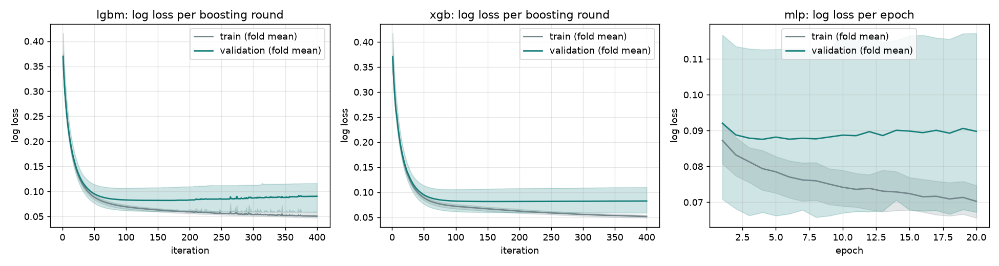
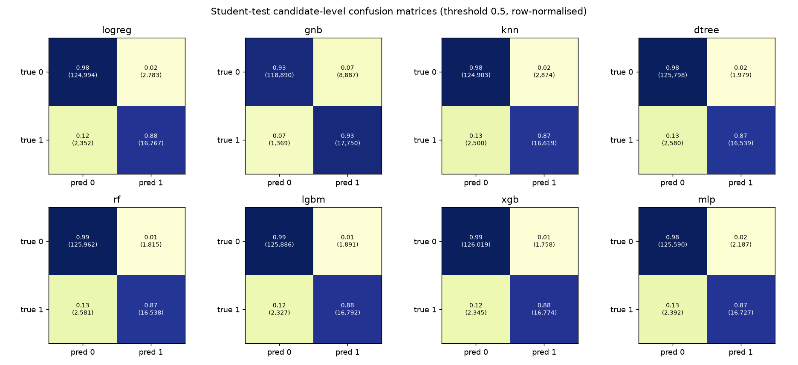
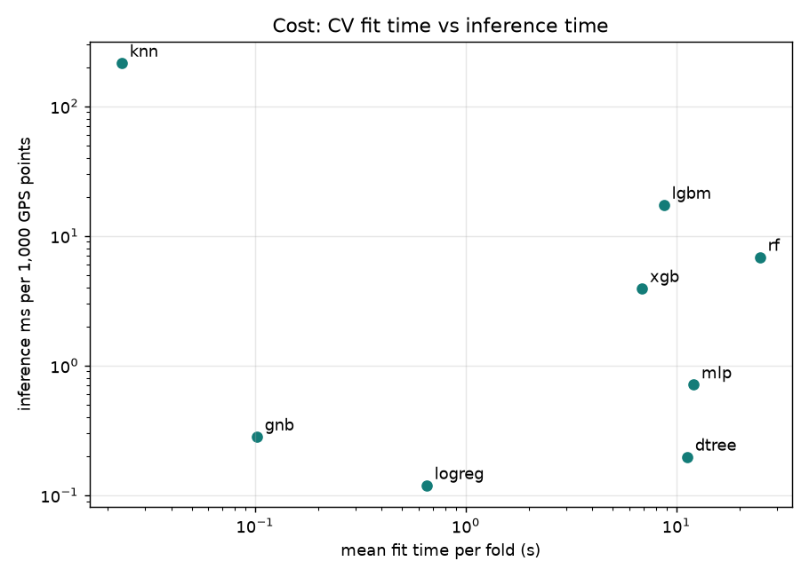
Setup (scripts/05_bayesian_hpo.py):
Objective: maximise mean observation Top-1 over 5 GroupKFold(by trip, shuffle, seed 42) folds, 78 trips. Student test was not used during the search; it was evaluated once afterwards.
| Hyperparameter | Distribution | Range | Best value |
|---|---|---|---|
| n_estimators | integer | [200, 1200], step 100 | 1000 |
| learning_rate | log-uniform uniform float | [0.01, 0.3] | 0.09431 |
| max_depth | integer | [3, 10], step 1 | 6 |
| min_child_weight | log-uniform uniform float | [1.0, 50.0] | 2.774 |
| subsample | uniform float | [0.5, 1.0] | 0.8343 |
| colsample_bytree | uniform float | [0.4, 1.0] | 0.4519 |
| gamma | uniform float | [0.0, 5.0] | 0.1822 |
| reg_lambda | log-uniform uniform float | [0.001, 10.0] | 1.078 |
| reg_alpha | log-uniform uniform float | [0.0001, 1.0] | 0.0004682 |
Table 4.1 — search space (experiments/results/phase5/search_space.json) and best trial #39 (best_params.json). Full trial log: trials.csv, optuna_xgb.db.
| Metric | Untuned | Tuned |
|---|---|---|
| CV macro-F1 | 0.9369 | 0.9360 |
| CV Top-1 (search objective) | 0.8863 | 0.8871 |
| Student-test Top-1 | 0.8970 | 0.8968 |
| Student-test macro-F1 | 0.9375 | 0.9365 |
| Student-test log loss | 0.0731 | 0.0739 |
| Inference ms / 1k points | 6.2 | 13.1 |
| Final fit time (s) | 9.2 | 17.2 |
Table 4.2 — untuned vs tuned XGBoost on identical folds and partitions (experiments/results/phase5/tuned_vs_untuned.csv).
Did tuning help? Not meaningfully. The best trial raised CV Top-1 by 0.08 pp, which is far below the fold-to-fold standard deviation (3.4 pp). On student test, the tuned model is equal or very slightly worse on Top-1, macro-F1 and log loss. It also needs 1000 trees instead of 400, roughly doubling fit and inference time.
The parameter-importance analysis puts learning rate, subsample and min_child_weight first. The history plot shows that the baseline (trial 0) stayed the best trial for the first 12 trials, and the running best then crept up by less than 0.1 pp in total. Our reading is that the classifier is limited by the information in the features (genuinely ambiguous parallel or overlapping arcs), not by its capacity. We kept the untuned configuration, and Phase 6 confirmed this: after HMM decoding, the untuned model is also slightly better (student-test Top-1 0.9552 vs 0.9528).
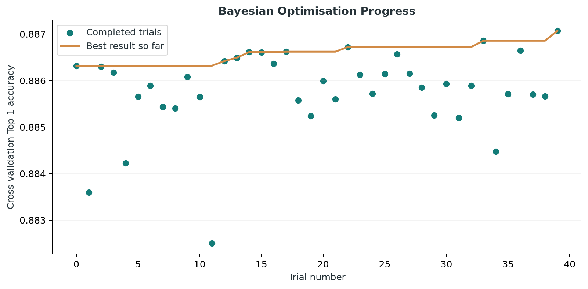
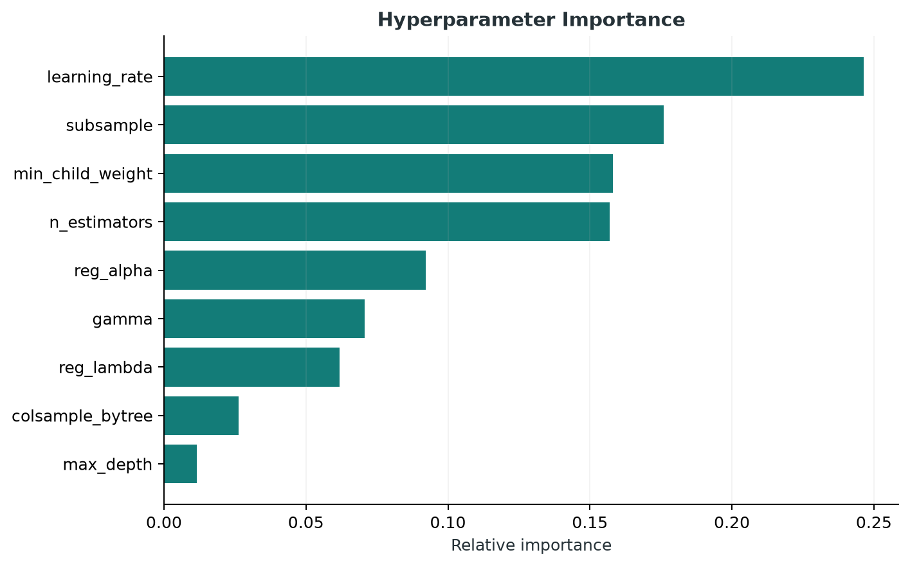
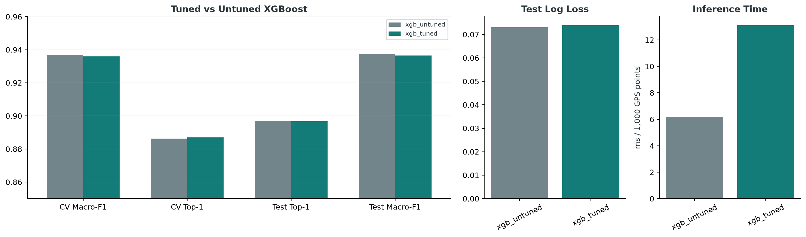
Implemented in src/pathsnap/hmm.py and evaluated by scripts/06_hmm_viterbi.py.
1. Hidden states
The candidate arcs of each GPS point, the same up-to-12 arcs within 50 m that the classifier scored. Point t has its own state set St.
2. Emission scores
log et(s) = α · log PXGB(s | features), with P clipped at 1e-6. The classifier's probability already combines distance, heading and neighbour consistency, so we do not add a separate Gaussian distance term. α = 1.0 balances emission against transition.
3. Transition scores
We use the Newson–Krumm idea: the road distance between consecutive matched positions should be close to the straight-line GPS distance. For candidates s at t and s' at t+1:
Staying on the same arc moving forwards costs nothing extra. Driving the wrong way along a one-way arc would need a long detour, so it is penalised.
4. Missing candidates and large gaps
Points with no candidate within 50 m are skipped by the decoder and left unmatched. They count as errors in Top-1, which keeps the metric honest. If consecutive points are more than gap_s = 120 s apart, the transition is replaced by a uniform one. This splits the chain, because after a long dropout the vehicle may have driven anywhere.
5. Disconnected consecutive segments
If no candidate pair is reachable within the bound (for example the network is clipped, or a GPS jump), every transition gets a fixed log penalty of −30 instead of −∞. Viterbi therefore never dead-ends and simply chooses the best emission. When the route is rebuilt, each pair of consecutive decoded arcs is joined by the shortest directed path between them. Pairs that still cannot be joined are counted as unbridged gaps.
Parameter selection
The decoder settings were chosen on out-of-fold training predictions (the 78 trips, each scored by the CV model that had not seen it), maximising Top-1, in two stages. First α ∈ {0.5, 1, 2} and β ∈ {2, 5, 10, 25} m were searched at gap_s = 30 s; then gap_s ∈ {10, 30, 120} s was searched at the best (α, β). Student test was not used. The best β (2 m) is at the edge of the grid, so a smaller β might be slightly better; we did not search further.
6. Did the HMM improve the route?
Yes, substantially:
| Split | Method | Top-1 | Continuity | Route precision | Route recall | Route F1 | Unbridged gaps |
|---|---|---|---|---|---|---|---|
| train | Classifier only | 0.8850 | 0.9473 | 0.7852 | 0.9891 | 0.8665 | 2210 |
| train | Classifier + HMM/Viterbi | 0.9323 | 0.9841 | 0.9647 | 0.9869 | 0.9751 | 96 |
| student-test | Classifier only | 0.8970 | 0.9414 | 0.8103 | 0.9970 | 0.8893 | 175 |
| student-test | Classifier + HMM/Viterbi | 0.9552 | 0.9840 | 0.9838 | 0.9974 | 0.9905 | 6 |
Table 5.1 — experiments/results/phase6/xgb_untuned/summary.csv
Where the HMM did not help. On 4 of 78 training trips Top-1 dropped slightly: 00000039 (-0.3 pp), 00000075 (-1.1 pp), 00000089 (-0.6 pp), 00000097 (-0.3 pp). The losses are at most 1.1 pp. A likely explanation, which we have not verified trip by trip, is that the transition model prefers the shorter consistent path, so real but unusual manoeuvres, such as a quick U-turn or a loop over short arcs, can be smoothed away. The largest gains were 00000016 (+15.7 pp), 00000010 (+14.9 pp), 00000051 (+14.1 pp). In these trips the classifier alternates between nearby candidate arcs, and the HMM forces one consistent choice.
| Trip | Points | Top-1 clf | Top-1 +HMM | Route F1 clf | Route F1 +HMM | Gaps clf → HMM |
|---|---|---|---|---|---|---|
| 00000000 | 2503 | 0.9509 | 0.9804 | 0.9521 | 0.9969 | 10 → 2 |
| 00000007 | 1354 | 0.9616 | 1.0000 | 0.9763 | 0.9965 | 0 → 0 |
| 00000009 | 1049 | 0.8866 | 0.9209 | 0.8806 | 0.9733 | 0 → 0 |
| 00000040 | 2995 | 0.9536 | 0.9793 | 0.9389 | 0.9996 | 11 → 0 |
| 00000052 | 262 | 0.9695 | 1.0000 | 0.9566 | 0.9984 | 3 → 0 |
| 00000056 | 3958 | 0.9096 | 0.9661 | 0.9101 | 0.9860 | 135 → 4 |
| 00000065 | 768 | 0.8659 | 0.8932 | 0.7713 | 0.9912 | 2 → 0 |
| 00000076 | 1486 | 0.9260 | 0.9818 | 0.7776 | 0.9828 | 1 → 0 |
| 00000077 | 3911 | 0.7750 | 0.9021 | 0.8126 | 0.9859 | 0 → 0 |
| 00000091 | 874 | 0.9073 | 0.9554 | 0.9174 | 0.9944 | 13 → 0 |
Table 5.2 — per-trip student-test results, experiments/results/phase6/xgb_untuned/per_trip.csv
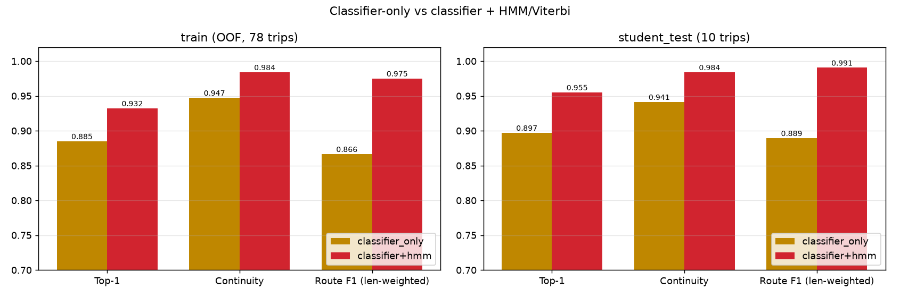
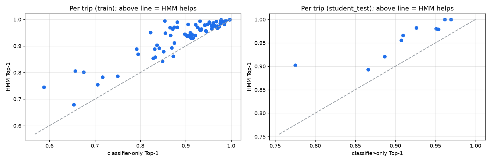
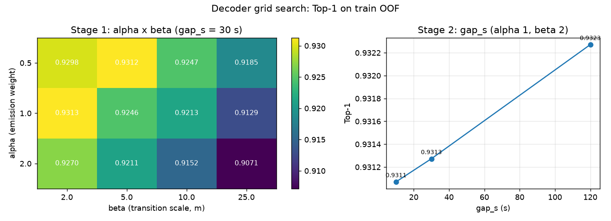
All maps are produced by src/pathsnap/viz.py::trip_map (called from scripts/01_eda.py,
02_labels_candidates.py and 06_hmm_viterbi.py), and live in reports/maps/*.html.
Each map has:
The evaluator UI draws the same kind of map from the API response, but without a reference layer, because the reference never leaves the server.
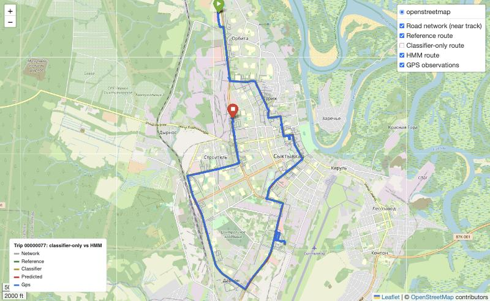
Figure 7.1 shows the same kind of Folium map as the evaluator UI draws it from an API response.
Laptop 1, API (api/main.py, FastAPI + uvicorn). At start-up it loads artifacts/xgb_final.json
and artifacts/pipeline_config.json, which are exported by scripts/07_export_artifacts.py and hold the
features, candidate settings and decoder parameters. Its endpoints:
GET /health: model status and decoder settings.GET /trips: the trip ids in the evaluation folder (ids only).POST /predict {"trip_id"}: runs the full pipeline, which reads only .track/.nodes/.arcs. After
prediction it reads the .route server-side to compute metrics, and returns the matched route polylines,
downsampled GPS points, metrics and timings. The reference route is never returned.Every request is logged to the console with client IP, status, Top-1, route F1 and latency.
Laptop 2, UI (ui/app.py, Streamlit + streamlit-folium). It talks to the API only over HTTP and
reads no trip files:
/trips./predict and shows the metrics and a Folium map.Deployment (see README):
PATHSNAP_EVAL_DIR=data/eval_test uvicorn api.main:app --host 0.0.0.0 --port 8000PATHSNAP_API=http://<laptop-1-ip>:8000 streamlit run ui/app.pyIntegration test (scripts/08_integration_test.py). The student-test trips stood in for the evaluation
trips. All 10/10 trips succeeded over HTTP, with pooled Top-1
0.9552, identical to the offline result. An unknown trip id returns HTTP 404, and no ground truth appears
in any response.
| Trip | HTTP | Points | Top-1 | Route F1 | Continuity | Server ms | Round trip ms |
|---|---|---|---|---|---|---|---|
| 00000000 | 200 | 2503 | 0.9804 | 0.9969 | 0.9968 | 218.6 | 265.1 |
| 00000007 | 200 | 1354 | 1.0000 | 0.9965 | 1.0000 | 72.0 | 95.2 |
| 00000009 | 200 | 1049 | 0.9209 | 0.9733 | 0.9485 | 231.5 | 264.0 |
| 00000040 | 200 | 2995 | 0.9793 | 0.9996 | 0.9963 | 218.8 | 283.3 |
| 00000052 | 200 | 262 | 1.0000 | 0.9984 | 0.9617 | 31.7 | 44.0 |
| 00000056 | 200 | 3958 | 0.9661 | 0.9860 | 0.9674 | 459.2 | 643.1 |
| 00000065 | 200 | 768 | 0.8932 | 0.9912 | 0.9857 | 127.3 | 148.2 |
| 00000076 | 200 | 1486 | 0.9818 | 0.9828 | 0.9751 | 550.7 | 599.6 |
| 00000077 | 200 | 3911 | 0.9021 | 0.9859 | 0.9946 | 395.3 | 465.6 |
| 00000091 | 200 | 874 | 0.9554 | 0.9944 | 0.9714 | 126.3 | 150.0 |
Table 7.1 — experiments/results/phase10/integration.csv
Two-laptop run. We then ran the real setup on two separate laptops connected over Tailscale (a private VPN that gives each laptop a fixed address, so the demo does not depend on the venue Wi-Fi):
http://100.87.111.15:8000.From Laptop 2, single trips and the "Evaluate all trips" run all succeeded, 10/10 trips, with pooled Top-1 95.52% and mean route F1 0.9905. These are the same per-trip numbers as Table 7.1. Laptop 1's console logged every request with Laptop 2's address (100.124.152.77), as shown in Figure 7.4.
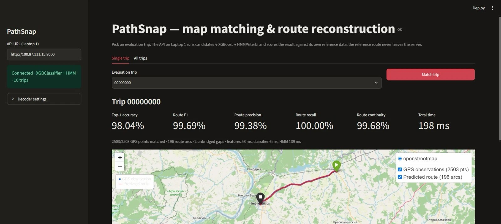
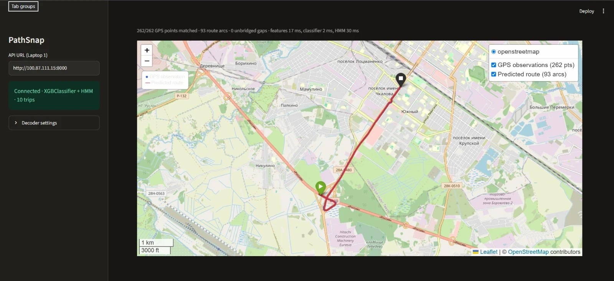
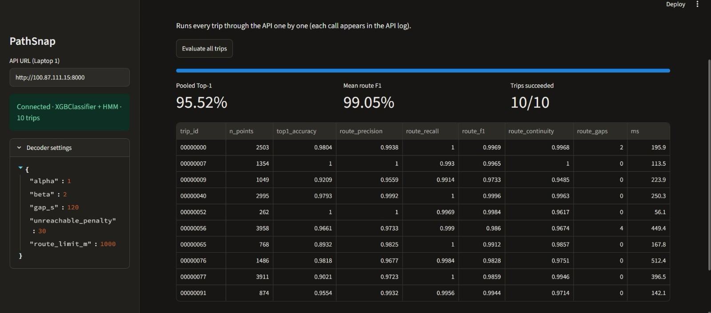
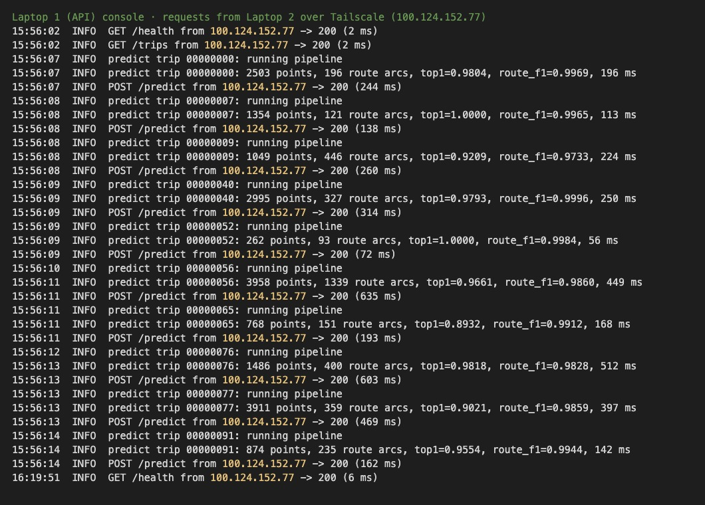
Reproducing the results. Every number and figure in this report comes from scripts in the repository, which
run in order: scripts/01_eda.py to 09_build_report.py (or run_all.sh). Seeds are fixed
(42), and logs are in experiments/logs/.
AI assistance. The team used an AI coding assistant (Claude) to help write code, scaffolding and report text. All experiments were run by the team on the provided data, and all reported numbers are read from the committed result files. Each member reviewed the code and the results, and can explain each part.